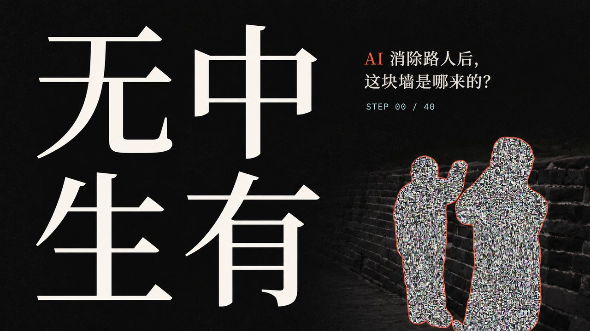

ZEXUAN604 · BEHIND THE VIDEOS
泽轩604 · 视频幕后
每条视频是怎么做出来的：选题、实测、文案、AI 出画面、返修和发布。页面里的数字都来自真实的制作记录。

《无中生有》：AI 消除路人后，墙是哪来的？
画面全是 AI 写代码渲出来的，被擦掉的那块墙在本机用 SDXL 真擦了一遍。
看制作幕后 →每条视频是怎么做出来的：选题、实测、文案、AI 出画面、返修和发布。页面里的数字都来自真实的制作记录。

画面全是 AI 写代码渲出来的，被擦掉的那块墙在本机用 SDXL 真擦了一遍。
看制作幕后 →